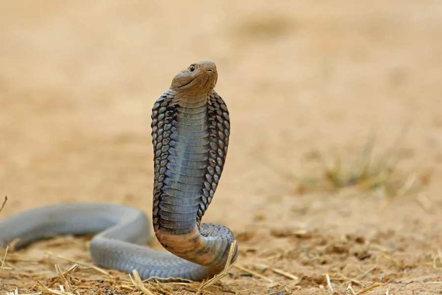

爬行动物 · 动物界
黑颈喷毒眼镜蛇 Naja nigricollis

非洲常见的喷毒眼镜蛇，能向前喷射毒液自卫，毒液溅入眼睛可致剧痛甚至失明，被咬须立即就医，是非洲较危险的毒蛇之一。
- 分类
- 门脊索动物门纲爬行纲目有鳞目科眼镜蛇科属眼镜蛇属
- 栖息环境
- 非洲撒哈拉以南的稀树草原、灌丛、农田与岩石地带
- 地理分布
- 非洲撒哈拉以南的广大地区
- 保护级别
- IUCN 无危（LC）；非中国原产，在中国无保护级别
物种志
黑颈喷毒眼镜蛇体长 1.2–2.2 米，头部椭圆，颈部能膨大成扁平的颈褶；体色多为黑褐、深灰或橄榄色，颈部腹面常有一条黑色横带，“黑颈”之名由此而来，腹部淡黄并带深色斑。它的毒牙前端有喷液孔，能将毒液向前喷射。
它分布于非洲撒哈拉以南的稀树草原、灌丛和农田，栖息于地面洞穴、白蚁丘和石缝，夜间和黄昏活动，捕食鼠类、蛙类、鸟类和其他蛇类。每年繁殖季雌蛇产卵 10–25 枚，孵化期约 60–80 天。黑颈喷毒眼镜蛇毒性较强，既能咬人也能喷射毒液，毒液溅入眼睛会引起剧痛和角膜损伤，须立即用大量清水冲洗并就医；被咬后同样需要尽快使用抗蛇毒血清治疗。
形态与习性
- 食性鼠类、蛙类、鸟类和其他蛇类
- 体长1.2–2.2 m
- 寿命约 15–20 年
- 繁殖卵生，10–25 枚，孵化 60–80 天
- 活动节律黄昏和夜间活动
- 毒性可喷射毒液，溅入眼睛可致剧痛甚至失明
趣味知识
- 黑颈喷毒眼镜蛇能通过毒牙前端的喷孔把毒液喷出 2 米远。
- 毒液一旦溅入眼睛，应立即用大量清水冲洗并尽快就医。
- 它颈部的黑色横带是“黑颈”名字的由来，受惊时颈褶会膨大。